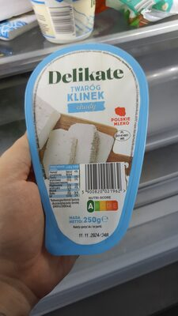

Najlepsze źródła białka w Auchan
Hipermarket, lady i duże opakowania pod meal prep
Asortyment i ceny zmieniają się z gazetką. Poniżej typowe kategorie i marki własne, które regularnie wracają na półki. Makro pochodzi z bazy Proteiner (wartości na 100 g) — zawsze sprawdź etykietę konkretnego opakowania.
Auchan to hipermarket: wygrywasz ceną za kilogram przy większych paczkach i lepszym wyborze ryb / mięsa z lady. Idealny na meal prep tygodniowy — niekoniecznie na „wpadkę po pracy po 2 produkty”.
Produkty warte uwagi

Twaróg chudy (typ marki własnej) przykład twarogu chudego z hipermarketu Serek wysokobiałkowy
Szybka kolacja / meal prep
Serek wysokobiałkowy
Szybka kolacja / meal prep
 Tofu Auchan / naturalne
Dni bez mięsa
Tofu Auchan / naturalne
Dni bez mięsa
 Pierś z kurczaka
Duże tacki pod meal prep
Pierś z kurczaka
Duże tacki pod meal prep
 Indyk mielony
Wybieraj niższy % tłuszczu
Indyk mielony
Wybieraj niższy % tłuszczu
 Dorsz
Ryba z lady lub mrożona
Dorsz
Ryba z lady lub mrożona
 Krewetki
Dużo białka przy niskich kcal
Krewetki
Dużo białka przy niskich kcal
 Fasola
Strączki na dni bez mięsa
Fasola
Strączki na dni bez mięsa
Zdjęcia produktów: społeczność Open Food Facts (ODbL) oraz redakcja Proteiner — przykładowe opakowania z asortymentu; oferta zmienia się w czasie.
Jak wybierać w Auchan
- Duże tacki piersi — piecz raz, jedz 3 dni.
- Mięso mielone z indyka — kotlety, sosy; wybieraj niższy % tłuszczu.
- Ryby z lady — dorsz, mintaj, czasem łosoś (więcej tłuszczu = więcej kcal).
- Nabiał w dużych wiaderkach — twaróg, serek HP, kefir jako napój (mniej białka).
- Strączki i tofu — na dni bez mięsa.
Strategia zakupów
Jedź raz w tygodniu: mięso + ryba + duże opakowania nabiału. Codzienne drobne zakupy (jajka, skyr) domykaj w dyskoncie bliżej domu — zobacz też Biedronkę i Lidl.
Inne sieci i dalej
- Źródła białka w Biedronce
- Źródła białka w Lidlu
- Źródła białka w Carrefour
- Przegląd 4 sieci
- Planowanie posiłków · Kalkulator
Na skróty: w Auchan bierz duże paczki mięsa, rybę z lady i wiaderka nabiału — resztę tygodnia domykaj dyskontem.